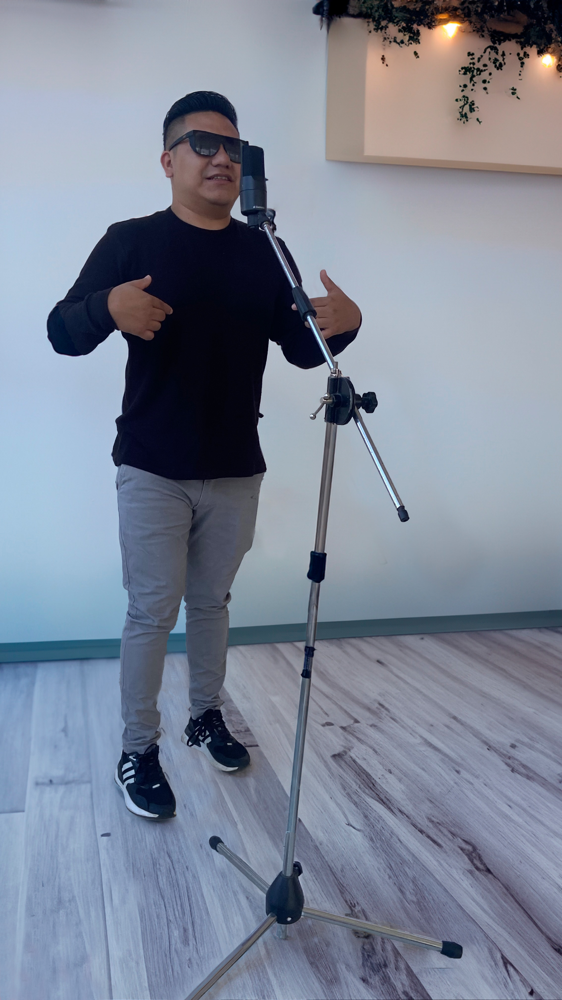
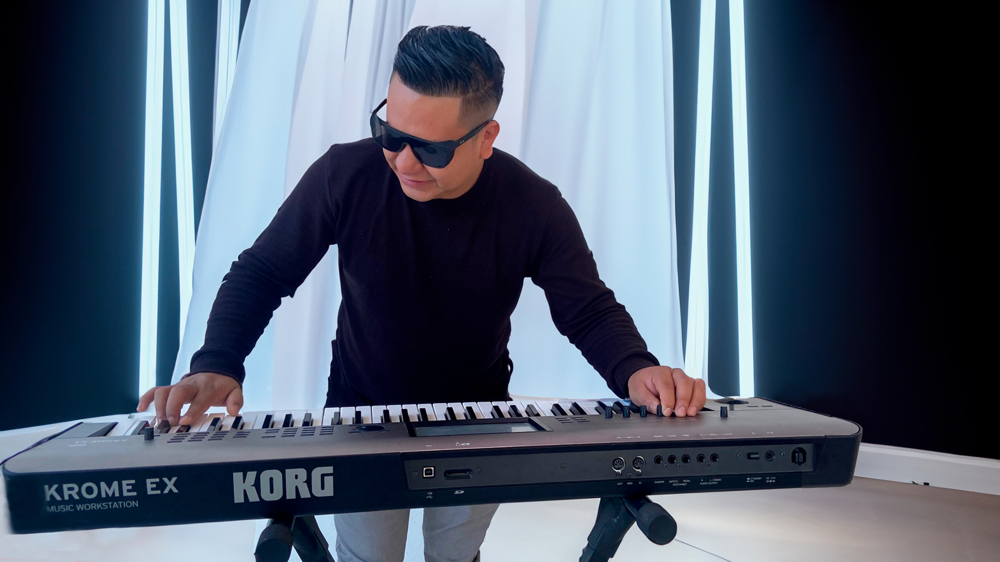

Transformando tus momentos especiales en experiencias inolvidables

Quién Soy
¡Hola! Soy Pablo, Soy un cantante con una pasión innata por la música y una voz versátil que se
adapta a diversos géneros musicales, desde baladas románticas hasta ritmos
enérgicos y modernos. Mi repertorio es extenso y cuidadosamente
seleccionado para conectar con audiencias de todas las edades y estilos.
Además, soy pianista, lo que me permite enriquecer mis presentaciones con
una interpretación musical auténtica y emocional.
Mi talento no solo destaca por la calidad vocal y técnica, sino también por la
capacidad de transmitir emociones profundas y crear experiencias memorables
en cada escenario. Estoy comprometido con la excelencia artística y en
constante búsqueda de innovar, trabajando incansablemente para ofrecer
espectáculos únicos y cautivadores.
Estoy listo para colaborar con productores, empresarios y discográficas que
busquen una propuesta musical sólida, original y con proyección internacional.
Si buscas talento, profesionalismo y pasión en un solo artista, estás en el lugar
correcto.

Visión y Misión
Visión:Convertirse en el artista principal y mas solicitado en Guatemala para presentaciones musicales de alta calidad en eventos sociales y corporativos, reconocido por su versatilidad vocal, carisma, y profesionalismo, ofreciendo experiencias inolvidables y emocionantes para cada audiencia.
entregando presentaciones memorables en cada show.
.
Misión: Ofrecer espectáculos, y proveer un
servicio musical profesional, de alta
calidad, que combine talento vocal
versátil, animación y carisma, con un
repertorio variado y adaptable,
superando las expectativas del público
y los organizadores, garantizando un
espectáculo personalizado a través de
un servicio profesional.
Objetivos, Estrategias y Propuestas
Objetivos:
Realizar al menos 8 presentaciones mensuales.
Mantener un índice de satisfacción del cliente superior al 90%.
Incrementar la presencia digital para captar nuevos clientes mediante estrategias de marketing.
Posicionar al cantante como un referente artístico en Guatemala.
Estrategias:
Diversificación del Repertorio: Cubrir géneros como baladas, pop, rock, cumbia, salsa, bachata y merengue, adaptándose a bodas, quinceaños, graduaciones y eventos empresariales.
Animación e Interacción: Combinar talento vocal con animación para garantizar un ambiente dinámico y agradable en cada presentación.
Colaboración con Músicos Profesionales: Ofrecer la opción de contratar una banda para enriquecer el espectáculo (con costo adicional).
Promoción Digital y Gira de Medios: Implementar estrategias de visibilidad en redes sociales y entrevistas en medios locales para captar mayor atención.
Propuestas:
Paquete Básico: Cantante solista con pista instrumental profesional (Q15,000 por evento).
Paquete Avanzado: Cantante acompañado por una banda en vivo (costo adicional de Q8,000 a Q10,000 según el número de músicos).
Servicios Ofrecidos
Costos y Presupuestos
Producto Básico (Cantante Solista)
Costo base: Q15,000 por evento.
Extras opcionales:
Banda musical: Q8,000 - Q10,000.
Ensayos previos con banda: Q500 por hora.
Gastos Operativos (Por evento)
Transporte del cantante: Q500 (dentro del área metropolitana; varía fuera de la ciudad).
Alojamiento (si es necesario): Q1,000 por noche.
Marketing Mensual
Campañas digitales: Q2,500.
Producción de contenido (video y fotografía): Q3,000.
Gira de Medios
Costo estimado por entrevistas y cobertura mediática: Q5,000 trimestral.
Servicios Ofrecidos
Interpretación de repertorio variado.
Animación durante el evento.
Personalización de repertorio según el cliente (previa consulta).
Sesión de fotos con los invitados (opcional).
Proceso de Contratación
Contacto Inicial: Se recibe la solicitud del cliente por WhatsApp, correo o formulario en el sitio web.
Consulta y Cotización: Se confirma la disponibilidad de fecha, se entrega cotización y se discuten los requisitos del rider técnico.
Contrato: Se elabora un contrato detallado que incluye políticas y términos.
Anticipo: El cliente realiza el depósito inicial del 50%.
Preparación del Evento: Coordinación del repertorio, ensayos (si aplica) y confirmación logística.
Evento: Se ejecuta el espectáculo bajo los términos acordados.
Evaluación: Posterior al evento, se solicita retroalimentación del cliente para mejorar los servicios.
Rider Técnico
El contratante debe leer atentamente este rider, ya que contiene los requerimientos básicos y generales para la presentación del show. Es fundamental cumplir con los términos y condiciones del contrato. Ningún cambio podrá realizarse sin antes contactar al PRODUCTION MANAGER. En caso de duda sobre algún requerimiento, no debe dar nada por hecho y debe esperar la aprobación del PRODUCTION MANAGER.
Backline
El contratante debe proveer el backline para la presentación de la banda. Es obligación de la empresa contratada entregar el backline limpio y en perfecto estado de funcionamiento, cumpliendo cabalmente con cada uno de los requisitos establecidos en este rider.
Políticas y Condiciones
Depósito Inicial: Se requiere un anticipo del 50% para confirmar la fecha.
Cancelaciones:
Hasta 15 días antes: Reembolso del 50% del anticipo.
Menos de 15 días: No hay reembolso.
Condiciones del Escenario: El cliente debe garantizar el cumplimiento del rider técnico. Si no se cumplen los requisitos, el evento podría ser cancelado sin devolución del anticipo.
Tiempo de Espera: Si el evento no inicia dentro del horario estipulado, se aplicará un cargo extra de Q1,000 por cada hora adicional.